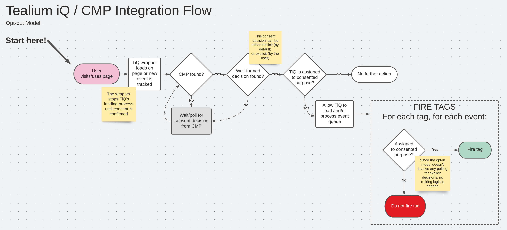

Developer documentation for a CMP Integration Framework for Tealium iQ.
Approach
The purpose of this integration is to allow Tealium iQ customers to control individual tags based on a user's interactions with various Consent Management Platforms.
Core Behaviors (Opt-In Model)
-
Tealium iQ will not fire any tags, or set any cookies, until a consent decision is available from the CMP. The expected CMP is not active on the page, no tags will be allowed to fire at all, and no cookies will be set.
-
If a consent decision isn't found when Tealium iQ loads, this solution will continually poll until one is found.
-
Until a consent decision is found, all events are queued, so they can be processed when a decision is found.
-
When a consent decision (either implicit or explicit) is available from the CMP, tags will be fired in accordance with that consent for all events that have been queued.
-
If the found consent decision is implicit and the opt-in pattern is active, events go into another queue after implicitly consented tags have been fired, so they can be re-processed for newly consented tags if the user makes an explicit decision. The solution will poll for an explicit decision until one is found, when appropriate.
-
If the found consent decision is explicit, all queues are emptied and polling stops. Tags that have already been fired on implicit consent are not re-fired when the explicit consent decision is processed.
-
If a user reopens the CMP's interactive layer and makes a new explicit consent decision, past events are NOT reprocessed with the new consent decision.
-
For new events processed after initial Tealium iQ load, the fresh consent decision is retrieved from the CMP as each event is processed by Tealium iQ.
Opt-In Flow
For regulations like GDPR.
Opt-Out Flow
For regulations like CCPA - the opt-in flow also works, but this simplified flow is more efficient.
What does it do?
- Allows individual Tealium iQ tags to be associated with a CMP group name (like "Google Analytics" or "Tealium iQ Tag Management" or "Analytics").
- Blocks any tags without consent from firing. The blocking logic works even for tags that are explicitly called using the
uidsarray (which circumvents load rules). - Allows any implicitly allowed tags to fire immediately (before user decision), then reprocesses the same event(s) for new tags only if the user makes an explicit choice.
- Makes the consent information available in each tracking event (in the
bobject), asb.groups_with_consent- array of allowed groups, name can be overridden by specific CMPsb.consent_type- 'explicit' or 'implicit' ((name can be overridden by specific CMPs
- Allows more than one tag to be mapped to a given service name.
What does it NOT do?
- Doesn't use any of Tealium iQ's built-in Consent Manager (or Privacy Manager) functionality, to avoid interference with legacy setups and allow more granular blocking.
- Doesn't set any cookies, add any entries to localStorage, or read any localStorage entries directly (instead, it uses CMP methods to check consent as needed).
- Doesn't allow more than one service name to be mapped to a given tag.
The only per-profile** configuration required is a map of service names to tag UIDs for each relevant Usercentrics settings ID, see GroupToTagMap for more detailed information.
Using this Documentation
This documentation is intended for developers, and was generated using JSDoc.
The menu headings offered by JSDoc don't fit our needs perfectly. You should read the headings as follows:
- MODULES - Tealium iQ extensions / JS files
- NAMESPACES - global object(s) on the page (window-scoped)
- GLOBAL - key data structures. Classes seem like they'd be better, but would include misleading constructors declarations.
Known Limitations
This framework presently uses polling, and expects a synchronous response from the cmpFetchCurrentConsentDecision method - patterns like callbacks and event listeners will be explored in subsequent iterations.
Maintaining a map in JSON is worse than a UI for mapping tags to groups.
So far, the follow integrations are prebuilt:
- OneTrust (opt-in and opt-out)
- Usercentrics V2 (opt-in)
Configuration Steps
Those steps are available in the README of the repo.
Testing
Unit Tests
There are unit tests set up for each CMP integration, you can run them (and the linter) with npm test
Integration Tests